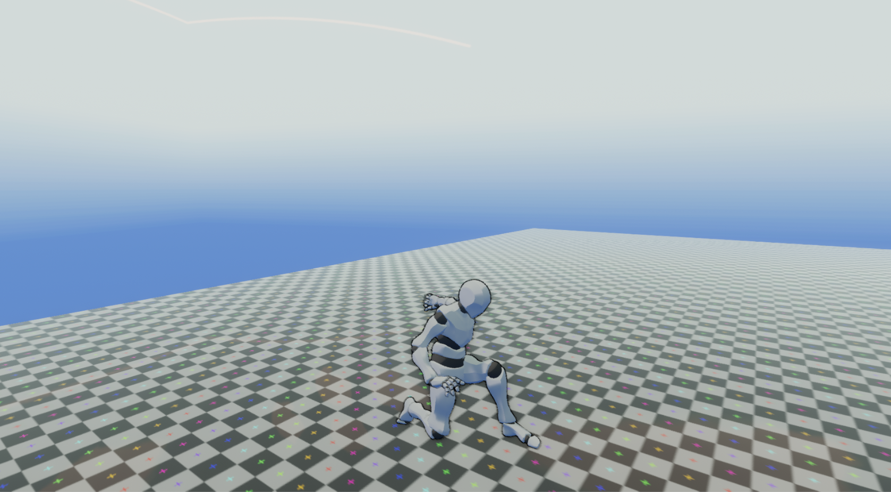

CODING
2D Character Logic
This is the Character Logic used for my 2d projects,
It handles basic movement, combat, stats, and camera control from a single script.
A demo I put together can be downloaded here.
First Person All in One
This is my logic set I use in projects that are played in first person
it's in active development with new features always being added.
It's designed to be simple to use yet very robust.
Something I wish I had when I started messing around with the Unity engine.
It's on the Unity Assets store for free here.

3rd Person All in One
A work in progress for my current project.
All the other 3rd person controllers I've seen in the style I want relied on Unity's Mechenim.
Which would be fine if I could animate well, but I can't, so I set out to make my own.
I'm not sure if I will put this on the Asset Store, but we'll see!
I do not own 3d character model shown in pictures, and is only being used for testing purposes.

This Site
I built this Web site from the ground up in about two weeks time.
I knew nothing about HTML or CSS when I started, but I got pretty comfortable with it after a little while.
What do you think?